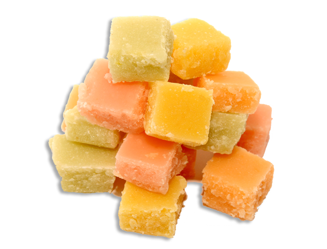

Классификация и характеристика
Конфеты с помадными корпусами получают увариванием сахаро-паточного сиропа до пересыщенного состояния и сбиванием с вкусовыми и ароматическими веществами( Осенний сад, колокольчик, весна, ромашка и др.)
Конфеты с ликерными корпусами получают увариванием сахарного сиропа с добавлением спирта, коньяка или портвейна, имеют мелкокристаллическую сахарную оболочку, внутри которой находится жидкая ликерная масса (Шоколадные бутылочки, Вишневый ликер, Медный всадник, Космос, Ленинград и др.)
Конфеты с фруктовыми корпусами готовят увариванием фруктово-ягодного сырья с сахаро-паточным сиропом с добавлением вкусовых и ароматических добавок до желеобразной консистенции. ( Южная ночь, Лето, Скачки, Цирк, Сулико и др.)
Конфеты с желейными корпусами получают увариванием сахара, патоки и желеобразующих веществ (агара, агороида, пектина).(Малинка, Лето, Аркадия, Южная ночь, Кристалл и др.)
Конфеты с желейно-фруктовыми корпусами получают увариванием фруктово-ягодного сырья, сахара и желеобразующего вещества (Черноморские, Огонек, Янтарь, Волга-Волга и др.)
Конфеты со сбивными корпусами изготавливается сбиванием сахарной пудры, патоки и яичных белков, добавляют фруктовое пюре, молоко, сливочное масло, орехи и другие вкусовые и ароматические компоненты. ( Суфле, Птичье молоко, Стратосфера и др.)
Конфеты с ореховыми корпусами получают из смеси тонко измельченных обжаренных орехов или масличных, зерновых и бобовых семян с сахаром и твердыми жирами с добавлением вкусовых и питательных веществ (Белочка, Чародейка, Салют, Кара-Кум, Мозаика)
Конфеты с марципановыми корпусами готовят перетиранием орехов с сахарной пудрой, патокой или сахаро-паточным сиропом и вкусовыми добавками ( Тропические, Эльбрус, Родина, Трио и др.)
Конфеты с грильяжными корпусами подразделяют на твердые, получаемые смешиванием плавленого сахара-песка с дроблеными ядрами орехов или масличных семян, и мягкие-смешиванием уваренной фруктовой массы с дробленными орехами. (Грильяж в шоколаде, Фантазия, Шутка и др.)
Конфеты с кремовыми корпусами вырабатывают сбиванием или растиранием шоколадной или помадной массы с жирами и вкусовыми добавками (вином, ванилином, орехами). (Красная Москва, Русский сувенир, Стрела и др.)
Конфеты с молочными корпусами готовят увариванием сахара, патоки и молока с добавлением орехов, фруктово-ягодного пюре, сливочного масла и др.( Малютка, Дюймовочка, Октябрёнок, Восход и др.)
Конфеты на карамельной основе состоят из карамельной массы с начинкой или с добавкой орехов. (Космические, Журавли, Ракета)
Конфеты с комбинированными корпусами состоят из разных конфетных масс, уложенных слоями.(Ярославна, Пиковая дама, Малиновые, Славянские и др.)
Конфеты, глазированные жировой глазурью готовят из кулинарных кондитерских жиров, какао-порошка, размолотой какавеллы или соевой муки, молотого арахиса. Выпускают их только с помадными корпусами.Ассортимент: Летние, Осенние, Степные, Золушка, Радужные и др.(добавляется жаренная рожь)
Ореховые конфет (пралиновые) Теннис, Альпинист, Батоны ореховые, Рот-Фронт, Батончик слоник (аромат апельсина), Батончик Дружная семейка ( в красной этикетке - зерна ржи, аромат ванили; в оранжевой - зерна ржи, хрустящие дробленные вафли; в зеленной - добавляется какао), Батончик Славянский простор ( с хрустящими вафлями, добавляется какао - порошок), Карнавальные и др.
Сбивные конфеты готовят из сбивной помадной массы с добавлением сухого молока и жареных орехов: Зайка-Зазнайка.
Слоеные конфеты состоят из нескольких слоев (двух или трех) конфетных масс, бывают чаще молочные, помадные, помадно фруктовые. Ассортимент: Куколка, Лесные, Восточный орех, Золотая осень, Спорт, Арктика, Пионерские.
Какао-крем кремовый корпус Трюфели, Школьные, Первоклассница, Сливочная тянучка, Дюймовочка, Коровка, Старт, Золотой теленок и др.

Помадные конфеты выпускают трех видов: из сахарной помады - Кремок, Фруктовая помадка, Фруктово-ягодный сахар, Киевская помадка. Нежная помадка; из помады крем-брюле (с добавлением топленого молока)
Молочные конфеты вырабатывают из молочной конфетной массы и молочно-сливочной помады. Ассортимент: Молочная и сливочная помадки (могут быть белого, розового, шоколадного цвета и с цукатами); Коровка, Сливочная тянучка, Школьные, Первоклассница.
Конфеты с корпусами из заспиртованных ягод и фруктов, цукатов в шоколаде (Клубника, Вишня, Слива в шоколаде и др.).